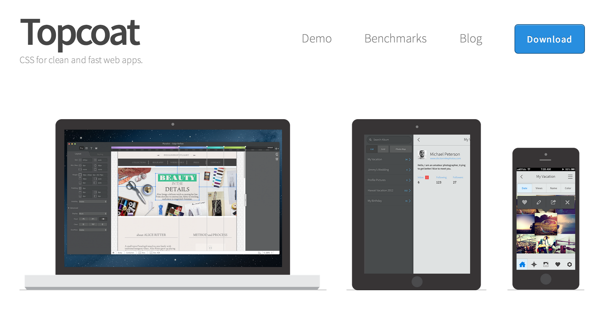

PhoneGap + AngularJS + Topcoat
Workshop
Kruy Vanna / @kruyvanna
Tool we will use
Monaca
- IDE on the cloud
- for PhoneGap App
#0
Getting Ready
Get a free account
https://monaca.mobi
Install Monaca Debugger
Now we are set!
Cordova/PhoneGap

Topcoat

Navigation Bar
AngularJS
Directives
let you create custom element.
Topcoat + Directives
Button
becomes
Button
Navigation Bar
becomes
Is it enough?
- fastclick
- -webkit-tap-highlight-color: rgba(0,0,0,0);
- -webkit-user-select: none;
- -webkit-overflow-scrolling: touch;
- Page management
Fastclick
highlight-color
user-select
overflow-scrolling: touch
Page management
Onsen UI
AngularJS + Topcoat + Mobile
+ Mobile
- fastclick
- -webkit-tap-highlight-color: rgba(0,0,0,0);
- -webkit-user-select: none;
- -webkit-overflow-scrolling: touch;
- iScroll for old Android browser
- Page management